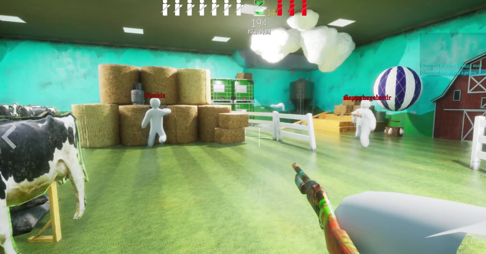

Paint yourself to blend in! "Meccha Chameleon" is a new-sensation hide-and-seek game where you paint your white body to mimic the stage. Spot, pose, and "artistic skill" are keys to survival. Deceive Seekers with techniques that put chameleons to shame! Supports public matches and streaming.
НЕДАВНИЕ ОБЗОРЫ:
ОБЗОРЫ (РУССКИЙ):
ДАТА ВЫХОДА:
РАЗРОБОТЧИК:
ИЗДАТЕЛЬ:
ОЧЕНЬ ПОЛОЖИТЕЛЬНЫЕ (4 234)
В ОСНОВНОМ ПОЛОЖИТЕЛЬНЫЕ(7 265)
ДАТА ВЫХОДА (10 июн. 2026 г.)
lemorion_1224
lemorion_1224
Об этой игре
Paint your own body! Blend in like a chameleon in this hide-and-seek game!
yeah! Mechcha "Hide and Seek"
The rules are simple. Split into the Seeker team and the Hider team to play hide-and-seek. The Seekers win if they find everyone within the time limit.
yeah! Mechcha "Paint"
The way you hide is a bit special. Paint your pure white body to blend into the stage. Just like a chameleon. The hiding spot, the pose, and above all, your artistic skills are the key! Deceive the Seekers' eyes with a mimicry that would even surprise a chameleon.
yeah! Mechcha "Matching"
Of course you can play with friends, but you can also play with people you don't know. (If you create a server that is not set to private, anyone can join freely.) Game streamers can easily host viewer participation games. The maximum number of players depends on the host's network environment. (2–10 players recommended. This may increase or decrease based on future playtests.)
[About Videos and Streaming]
Gameplay videos and streaming are welcome. Please check the following two points:
- Include the name of this game in the title. (Required)
- Include the Steam store page URL in the description. (Optional)